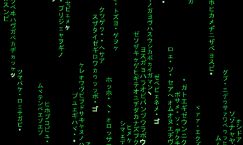

I have a great facination on simulation. When I have enrolled in my undergraduate program, I was thinking to make some physics simualtion that i learned in high school. I first got my laptop from my father that time. I know a little bit of C and Java I have learned in high school and I dont have any idea about computer graphics. At that time, i was highly inspired by a book The Nature of Code by Daniel Shiffman. He was using p5.js library, i found it highly intersting. Later I was introduced to pygame library of python and thinking that why not try to customize pygame like p5. Though it was not succesfull, but i modulalize some functionality and made some Simulation.
It is the most simplest simualtion.
